xgxr Overview
Andrew Stein, Fariba Khanshan, Alison Margolskee
2023-10-13
Source:vignettes/xgxr_overview.Rmd
xgxr_overview.RmdOverview
The xgxr package supports a structured approach to exploring PKPD data (outlined here). It also contains helper functions for enabling the modeler to follow best R practices (by appending the program name, figure name location, and draft status to each plot) and enabling the modeler to follow best graphical practices (by providing an xgx theme that reduces chart ink, and by providing time-scale, log-scale, and reverse-log-transform-scale functions for more readable axes).
Traceability: annotating and saving plots and tables
Annotating figures
Our best practices require that we mark plots as “DRAFT” if not yet
final, and also list the program that created the plot and the location
where the plot is stored. This helps with the traceability of the work,
by ensuring that the following information is available for every plot
in a report: the R script used to create the figure, the location where
the figure is stored, and the time and date when the figure was created.
The key function is: * xgx_annotate_status allows for the
addition of text (like the word draft) to the plots * The caption is set
to contain the file directory, program name, output name, and time of
creation
caption = paste("File_Directory","\n",
"Progam_Name.Rmd", "\n",
"Output_Name.html","\n",
paste(Sys.time()),
collapse = "\n")
ggcaption = list(labs(caption = caption),
theme(plot.caption = element_text(hjust = 0.5)))
data <- data.frame(x = 1:1000, y = stats::rnorm(1000))
g <- xgx_plot(data = data, aes(x = x, y = y)) +
geom_point() +
xgx_annotate_status(status = "DRAFT") +
ggcaption
The the function xgx_save works only with ggplot
objects. If the figure that is created is not a ggplot object, it will
not work. An alternative is to use xgx_annotate_status_png
to add the status and filename to png files.
data <- data.frame(x = 1:1000, y = stats::rnorm(1000))
g <- xgx_plot(data = data, aes(x = x, y = y)) +
geom_point()
filename = file.path(tempdir(), "png_example.png")
ggsave(filename, plot = g, height = 4, width = 4, dpi = 75)
xgx_annotate_status_png(filename, "./ExampleScript.R")
#> Add footnote to /tmp/RtmpsnQL7V/png_example.pngGraphics helpers
xgx theme
The xgx_theme() function includes the xGx recommended
plot settings. It sets the background to white with light grey lines for
the major and minor breaks. This minimizes chart ink as recommended by
Edward Tufte. You can add xgx_theme() to an existing
ggplot object, or you can call xgx_plot() in
place of ggplot() for all of your plot initiations.
xgx_plot(mtcars, aes(x = cyl, y = mpg)) + geom_point()You may wish to set the theme to xgx_theme for your R
session, as we do below.
theme_set(xgx_theme())
## Alternative, equivalent function:
xgx_theme_set()
# time <- rep(seq(1,10),5)
# id <- sort(rep(seq(1,5), 10))
# conc <- exp(-time)*sort(rep(rlnorm(5),10))
#
# data <- data.frame(time = time, concentration = conc, id = factor(id))
# xgx_plot() + xgx_geom_spaghetti(data = data, mapping = aes(x = time, y = concentration, group = id, color = id))
#
# xgx_spaghetti(data = data, mapping = aes(x = time, y = concentration, group = id, color = id))Confidence intervals
The code for confidence intervals is a bit complex and hard to
remember. Rather than copy-pasting this code we provide the function
xgx_stat_ci for calculating and plotting default confidence
intervals and also xgx_geom_ci for percentile intervals.
xgx_stat_ci allows the definition of multiple
geom options in one function call, defined through a list.
The default is geom = list("point","line","errorbar").
Additional ggplot options can be fed through the ggplot
object call, or the xgx_stat_ci layer. (Note that
xgx_stat_ci and xgx_geom_ci are equivalent).
xgx_stat_pi and xgx_geom_pi work in a similar
fashion but for percentile intervals.
data <- data.frame(x = rep(c(1, 2, 3), each = 20),
y = rep(c(1, 2, 3), each = 20) + stats::rnorm(60),
group = rep(1:3, 20))
xgx_plot(data,aes(x = x, y = y)) +
xgx_stat_ci(conf_level = .95)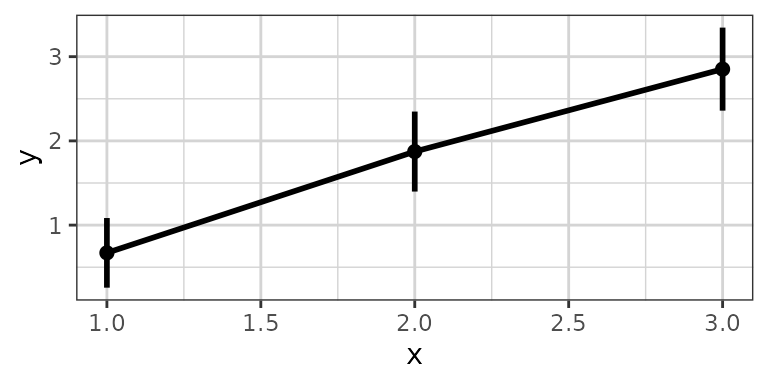
xgx_plot(data,aes(x = x, y = y)) +
xgx_stat_pi(percent = .95)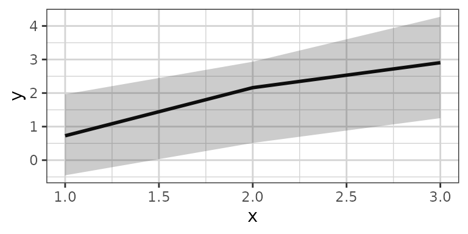
xgx_plot(data,aes(x = x, y = y)) +
xgx_stat_ci(conf_level = .95, geom = list("pointrange","line"))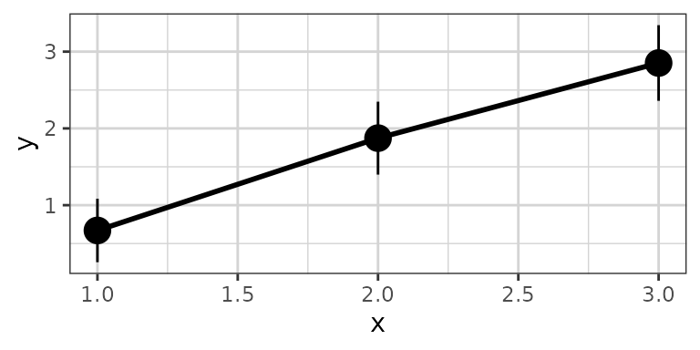
xgx_plot(data,aes(x = x, y = y)) +
xgx_stat_ci(conf_level = .95, geom = list("ribbon","line"))
xgx_plot(data,aes(x = x, y = y, group = group, color = factor(group))) +
xgx_stat_ci(conf_level = .95, alpha = 0.5,
position = position_dodge(width = 0.5))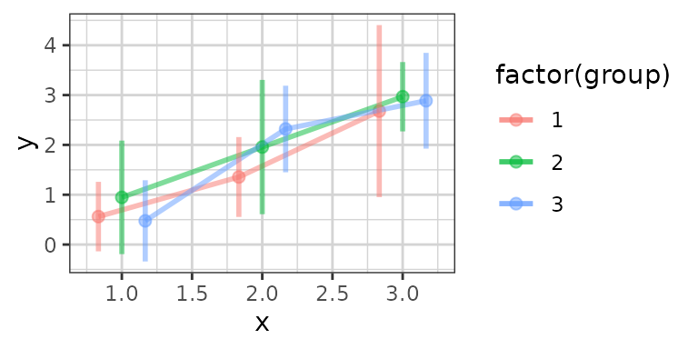
The default settings calculate the confidence interval based on the
Student t Distribution (assuming normally distributed data). You can
also specify “lognormal”“,”binomial”” or “multinomial”” for the
distribution. The first will perform the confidence
interval operation on the log-scaled data, the second uses the binomial
exact confidence interval calculation from the binom
package, and the third uses MultinomCI from the
DescTools package. The “multinomial”” option is used for
ordinal response or categorical data.
Note: you DO NOT need to use both
distribution = "lognormal" and
scale_y_log10(), choose only one of these.
# plotting lognormally distributed data
data <- data.frame(x = rep(c(1, 2, 3), each = 20),
y = 10^(rep(c(1, 2, 3), each = 20) + stats::rnorm(60)),
group = rep(1:3, 20))
xgx_plot(data, aes(x = x, y = y)) +
xgx_stat_ci(conf_level = 0.95, distribution = "lognormal")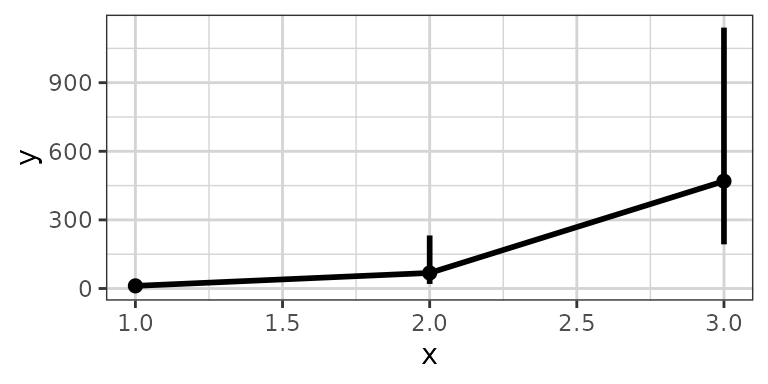
# note: you DO NOT need to use both distribution = "lognormal" and scale_y_log10()
xgx_plot(data,aes(x = x, y = y)) +
xgx_stat_ci(conf_level = 0.95) + xgx_scale_y_log10()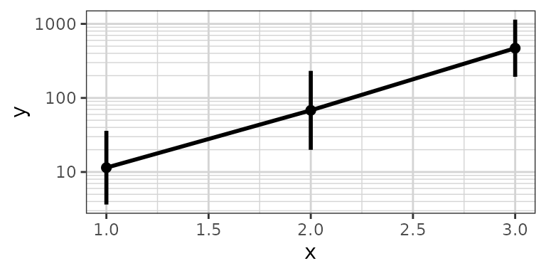
# plotting binomial data
data <- data.frame(x = rep(c(1, 2, 3), each = 20),
y = rbinom(60, 1, rep(c(0.2, 0.6, 0.8), each = 20)),
group = rep(1:3, 20))
xgx_plot(data, aes(x = x, y = y)) +
xgx_stat_ci(conf_level = 0.95, distribution = "binomial")
# Example plotting the percent of subjects in a categorical covariate group by treatment.
set.seed(12345)
data = data.frame(x = 120*exp(rnorm(100,0,1)),
response = sample(c("Trt1", "Trt2", "Trt3"), 100, replace = TRUE),
covariate = factor(sample(c("White","Black","Asian","Other"), 100, replace = TRUE),
levels = c("White", "Black", "Asian", "Other")))
xgx_plot(data = data) +
xgx_stat_ci(mapping = aes(x = response, response = covariate),
distribution = "ordinal") +
xgx_stat_ci(mapping = aes(x = 1, response = covariate), geom = "hline",
distribution = "ordinal") +
scale_y_continuous(labels = scales::percent_format()) +
facet_wrap(~covariate) +
xlab("Treatment group") + ylab("Percent of subjects by category")
#> In xgx_stat_ci:
#> The following aesthetics are identical to response: PANEL
#> These will be used for differentiating response groups in the resulting plot.
#> In xgx_stat_ci:
#> The following aesthetics are identical to response: PANEL
#> These will be used for differentiating response groups in the resulting plot.
#> In xgx_stat_ci:
#> The following aesthetics are identical to response: PANEL
#> These will be used for differentiating response groups in the resulting plot.
#> In xgx_stat_ci:
#> The following aesthetics are identical to response: PANEL
#> These will be used for differentiating response groups in the resulting plot.
#> Warning: Unknown or uninitialised column: `flipped_aes`.
#> Unknown or uninitialised column: `flipped_aes`.
#> Warning: Unknown or uninitialised column: `width`.
#> Warning: Unknown or uninitialised column: `linewidth`.
#> Warning: Unknown or uninitialised column: `size`.
#> Warning: Unknown or uninitialised column: `linewidth`.
#> Warning: Unknown or uninitialised column: `size`.
xgx_stat_ci can now also cut data by quantiles of
x using the bins option,
e.g. bins = 4 will cut the data by quartiles of
x. You can also supply your own breaks to cut the data.
# plotting
set.seed(12345)
data = data.frame(x = 120*exp(rnorm(100,0,1)),
response = sample(c("Mild","Moderate","Severe"), 100, replace = TRUE),
covariate = sample(c("Male","Female"), 100, replace = TRUE)) %>%
mutate(y = (50 + 20*x/(200 + x))*exp(rnorm(100, 0, 0.3)))
# plotting a lognormally distributed variable by quartiles of x
xgx_plot(data = data) +
xgx_stat_ci(mapping = aes(x = x, y = y, colour = covariate),
distribution = "lognormal", bins = 4)
# plotting ordinal or multinomial data, by quartiles of x
xgx_plot(data = data) +
xgx_stat_ci(mapping = aes(x = x, response = response, colour = covariate),
distribution = "ordinal", bins = 4) +
scale_y_continuous(labels = scales::percent_format()) + facet_wrap(~response)
#> In xgx_stat_ci:
#> The following aesthetics are identical to response: PANEL
#> These will be used for differentiating response groups in the resulting plot.
#> In xgx_stat_ci:
#> The following aesthetics are different from response: colour
#> These will be used to divide the data into different groups before calculating summary statistics on the response.
#> In xgx_stat_ci:
#> The following aesthetics are identical to response: PANEL
#> These will be used for differentiating response groups in the resulting plot.
#> In xgx_stat_ci:
#> The following aesthetics are different from response: colour
#> These will be used to divide the data into different groups before calculating summary statistics on the response.
#> In xgx_stat_ci:
#> The following aesthetics are identical to response: PANEL
#> These will be used for differentiating response groups in the resulting plot.
#> In xgx_stat_ci:
#> The following aesthetics are different from response: colour
#> These will be used to divide the data into different groups before calculating summary statistics on the response.
#> Warning: Unknown or uninitialised column: `flipped_aes`.
#> Unknown or uninitialised column: `flipped_aes`.
#> Warning: Unknown or uninitialised column: `width`.
xgx_plot(data = data) +
xgx_stat_ci(mapping = aes(x = x, response = response, colour = response),
distribution = "ordinal", bins = 4) +
scale_y_continuous(labels = scales::percent_format()) + facet_wrap(~covariate)
#> In xgx_stat_ci:
#> The following aesthetics are identical to response: colour
#> These will be used for differentiating response groups in the resulting plot.
#> In xgx_stat_ci:
#> The following aesthetics are different from response: PANEL
#> These will be used to divide the data into different groups before calculating summary statistics on the response.
#> In xgx_stat_ci:
#> The following aesthetics are identical to response: colour
#> These will be used for differentiating response groups in the resulting plot.
#> In xgx_stat_ci:
#> The following aesthetics are different from response: PANEL
#> These will be used to divide the data into different groups before calculating summary statistics on the response.
#> In xgx_stat_ci:
#> The following aesthetics are identical to response: colour
#> These will be used for differentiating response groups in the resulting plot.
#> In xgx_stat_ci:
#> The following aesthetics are different from response: PANEL
#> These will be used to divide the data into different groups before calculating summary statistics on the response.
#> Warning: Unknown or uninitialised column: `flipped_aes`.
#> Warning: Unknown or uninitialised column: `flipped_aes`.
#> Warning: Unknown or uninitialised column: `width`.
Nonlinear smoothing (e.g. Emax), and ordinal response smoothing
The current ggplot2::geom_smooth does not allow for plotting
confidence bands for method = “nls”, as ggplot2 does not supply a
predictdf for an object of class nls, which
geom_smooth silently calls to calculate the ymin and ymax for the
confidence bands. The xgxr package includes a definition of
predictdf.nls, allowing for confidence bands for method =
“nls”.
set.seed(123456)
Nsubj <- 10
Doses <- c(0, 25, 50, 100, 200)
Ntot <- Nsubj*length(Doses)
times <- c(0,14,30,60,90)
dat1 <- data.frame(ID = 1:(Ntot),
DOSE = rep(Doses, Nsubj),
E0 = 50*rlnorm(Ntot, 0, 0.3),
Emax = 100*rlnorm(Ntot, 0, 0.3),
ED50 = 50*rlnorm(Ntot, 0, 0.3)) %>%
dplyr::mutate(Response = (E0 + Emax*DOSE/(DOSE + ED50))*rlnorm(Ntot, 0, 0.3) ) %>%
merge(data.frame(ID = rep(1:(Ntot), each = length(times)), Time = times), by = "ID")
gg <- xgx_plot(data = dat1, aes(x = DOSE, y = Response))
gg <- gg + geom_point()
gg
gg + geom_smooth(method = "nlsLM",
formula = y ~ E0 + Emax*x/(ED50 + x),
method.args = list(start = list(E0 = 1, ED50 = 1, Emax = 1),
lower = c(-Inf, 0, -Inf)))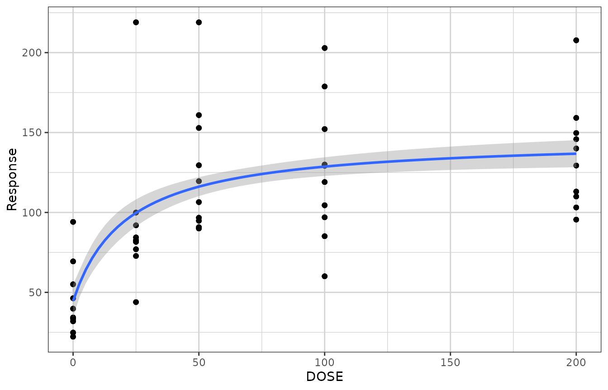
xgxr also includes an Emax smooth function called
xgx_geom_smooth_emax which utilizes the “nlsLM” method, and
silently calls the predictdf.nls defined by xgxr.
gg + xgx_geom_smooth_emax()
#> Warning in xgx_geom_smooth_emax(): Formula not specified.
#> Using default formula y ~ E0 + Emax*x/(ED50 + x),
#> initializing E0, Emax, and ED50 to 1,
#> and setting lower bound on ED50 to 0
#> Warning in xgx_stat_smooth(mapping = mapping, data = data, geom = geom, :
#> Ignoring unknown parameters: `n_boot`
gg +
xgx_geom_smooth_emax(geom = "ribbon", color = "black", fill = NA, linetype = "dashed") +
xgx_geom_smooth_emax(geom = "line", color = "red")
#> Warning in xgx_geom_smooth_emax(geom = "ribbon", color = "black", fill = NA, : Formula not specified.
#> Using default formula y ~ E0 + Emax*x/(ED50 + x),
#> initializing E0, Emax, and ED50 to 1,
#> and setting lower bound on ED50 to 0
#> Warning in xgx_geom_smooth_emax(geom = "ribbon", color = "black", fill = NA, : Ignoring unknown parameters: `n_boot`
#> Warning in xgx_geom_smooth_emax(geom = "line", color = "red"): Formula not specified.
#> Using default formula y ~ E0 + Emax*x/(ED50 + x),
#> initializing E0, Emax, and ED50 to 1,
#> and setting lower bound on ED50 to 0
#> Warning in xgx_stat_smooth(mapping = mapping, data = data, geom = geom, :
#> Ignoring unknown parameters: `n_boot`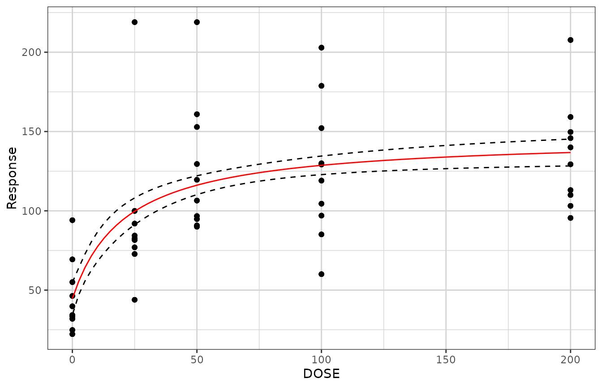
xgxr also modifies the stats method predict.nls for
nls objects in order to include confidence interval
prediction. Upon loading the xgxr package, the predict
method for class nls should be updated to the xgxr version,
and include functionality to supply confidence intervals. In order to
output the confidence intervals, be sure to specify
interval = "confidence". The output will contain a “fit”
data.frame with values for “fit”, “lwr” and “upr” representing the
prediction and lower and upper confidence intervals.
mod <- nlsLM(formula = Response ~ E0 + Emax * DOSE / (ED50 + DOSE),
data = dat1,
start = list(E0 = 1, ED50 = 1, Emax = 1),
lower = c(-Inf, 0, -Inf))
predict(mod,
newdata = data.frame(DOSE = c(0, 25, 50, 100, 200)),
se.fit = TRUE)
#> $fit
#> [1] 44.60368 99.70517 116.14226 128.68292 136.76043
#>
#> $se.fit
#> [1] 5.219335 4.289631 3.012974 2.969559 4.294878
#>
#> $df
#> [1] 247
predict(mod,
newdata = data.frame(DOSE = c(0, 25, 50, 100, 200)),
se.fit = TRUE, interval = "confidence", level = 0.95)
#> $fit
#> fit lwr upr
#> 1 44.60368 34.32360 54.88376
#> 2 99.70517 91.25625 108.15409
#> 3 116.14226 110.20786 122.07666
#> 4 128.68292 122.83404 134.53181
#> 5 136.76043 128.30118 145.21969
#>
#> $se.fit
#> [1] 5.219335 4.289631 3.012974 2.969559 4.294878
#>
#> $df
#> [1] 247xgxr also includes ordinal response smoothing as an option under the
xgx_stat_smooth function, indicated by
method = "polr". This requires a dataset of x values and
response values, to be defined in the mapping. This method also allows
defining of color, fill, facet, linetype, etc. by the response category,
while preserving the ordinal response fit across these categories.
# example with ordinal data (method = "polr")
set.seed(12345)
data = data.frame(x = 120*exp(stats::rnorm(100,0,1)),
response = sample(c("Mild","Moderate","Severe"), 100, replace = TRUE),
covariate = sample(c("Male","Female"), 100, replace = TRUE)) %>%
dplyr::mutate(y = (50 + 20*x/(200 + x))*exp(stats::rnorm(100, 0, 0.3)))
# example coloring by the response categories
xgx_plot(data = data) +
xgx_stat_smooth(mapping = ggplot2::aes(x = x, response = response,
colour = response, fill = response),
method = "polr") +
ggplot2::scale_y_continuous(labels = scales::percent_format())
#> `geom_smooth()` using formula 'response ~ x'
#> In xgx_stat_smooth:
#> The following aesthetics are identical to response: PANEL, colour, fill
#> These will be used for differentiating response groups in the resulting plot.
#> In xgx_stat_smooth:
#> response should be a factor, converting to factor using as.factor(response) with default levels
# example faceting by the response categories, coloring by a different covariate
xgx_plot(data = data) +
xgx_stat_smooth(mapping = ggplot2::aes(x = x, response = response,
colour = covariate, fill = covariate),
method = "polr", level = 0.80) +
ggplot2::facet_wrap(~response) +
ggplot2::scale_y_continuous(labels = scales::percent_format())
#> `geom_smooth()` using formula 'response ~ x'
#> In xgx_stat_smooth:
#> The following aesthetics are identical to response: PANEL
#> These will be used for differentiating response groups in the resulting plot.
#> In xgx_stat_smooth:
#> The following aesthetics are different from response: colour, fill
#> These will be used to divide the data into different groups before calculating summary statistics on the response.
#> In xgx_stat_smooth:
#> response should be a factor, converting to factor using as.factor(response) with default levels
Nice log scale
This version of the log scale function shows the tick marks between the major breaks (i.e. at 1, 2, 3, … 10, instead of just 1 and 10). It also uses \[10^x\] notation when the labels are base 10 and are very small or very large (<.001 or >9999)
df <- data.frame(x = c(0, stats::rlnorm(1000, 0, 1)),
y = c(0, stats::rlnorm(1000, 0, 3)))
xgx_plot(data = df, aes(x = x, y = y)) +
geom_point() +
xgx_scale_x_log10() +
xgx_scale_y_log10()
#> Warning: Transformation introduced infinite values in continuous x-axis
#> Warning: Transformation introduced infinite values in continuous y-axis
Reverse log transform
This transform is useful for plotting data on a percentage scale that can approach 100% (such as receptor occupancy data).
conc <- 10^(seq(-3, 3, by = 0.1))
ec50 <- 1
data <- data.frame(concentration = conc,
bound_receptor = 1 * conc / (conc + ec50))
gy <- xgx_plot(data, aes(x = concentration, y = bound_receptor)) +
geom_point() +
geom_line() +
xgx_scale_x_log10() +
xgx_scale_y_reverselog10()
gx <- xgx_plot(data, aes(x = bound_receptor, y = concentration)) +
geom_point() +
geom_line() +
xgx_scale_y_log10() +
xgx_scale_x_reverselog10()
gridExtra::grid.arrange(gy, gx, nrow = 1)Nice scale for percent change data
This transform is useful for plotting percent change from baseline data. Percent change data can range from -100% to +Inf%, and depending on the range of the data, a linear scale can lose the desired resolution. This transform plots percent change data on a scale of log10(PCHG + 100%), similar to a log scale of ratio to baseline.
Nsubj <- 10
Doses <- c(0, 25, 50, 100, 200)
Ntot <- Nsubj*length(Doses)
times <- c(0,14,30,60,90)
dat1 <- data.frame(ID = 1:(Ntot),
DOSE = rep(Doses, Nsubj),
PD0 = rlnorm(Ntot, log(100), 1),
Kout = exp(rnorm(Ntot,-2, 0.3)),
Imax = 1,
ED50 = 25) %>%
dplyr::mutate(PDSS = PD0*(1 - Imax*DOSE/(DOSE + ED50))*exp(rnorm(Ntot, 0.05, 0.3)) ) %>%
merge(data.frame(ID = rep(1:(Ntot), each = length(times)), Time = times), by = "ID") %>%
dplyr::mutate(PD = ((PD0 - PDSS)*(exp(-Kout*Time)) + PDSS),
PCHG = (PD - PD0)/PD0)
ggplot2::ggplot(dat1 %>% subset(Time == 90),
ggplot2::aes(x = DOSE, y = PCHG, group = DOSE)) +
ggplot2::geom_boxplot() +
xgx_theme() +
xgx_scale_y_percentchangelog10() +
ylab("Percent Change from Baseline") +
xlab("Dose (mg)")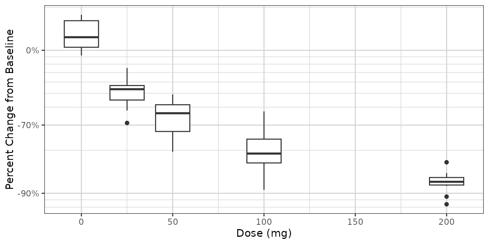
ggplot2::ggplot(dat1,
ggplot2::aes(x = Time, y = PCHG, group = ID, color = factor(DOSE))) +
ggplot2::geom_line() +
xgx_theme() +
xgx_scale_y_percentchangelog10() +
guides(color = guide_legend(title = "Dose (mg)")) +
ylab("Percent Change from Baseline")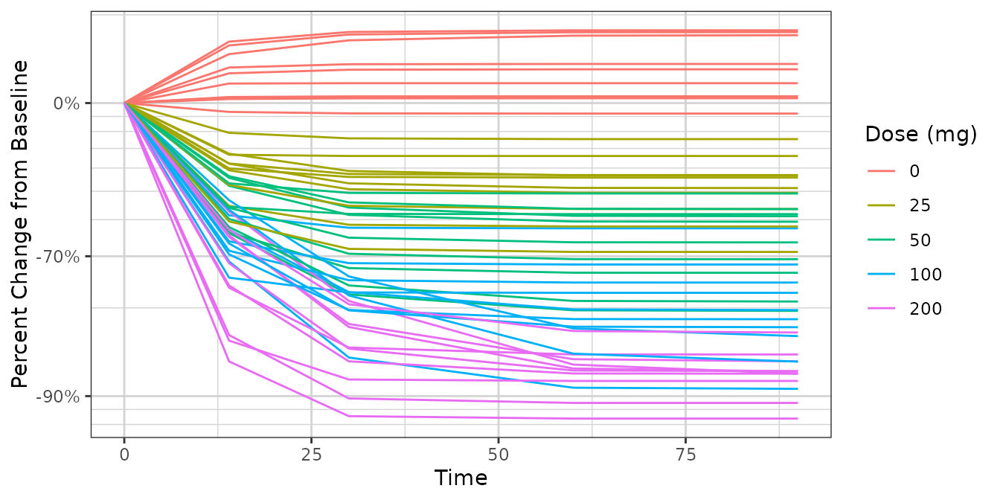
dat2 <- data.frame(ID = 1:(Ntot),
DOSE = rep(Doses, Nsubj),
PD0 = rlnorm(Ntot, log(100), 1),
Kout = exp(rnorm(Ntot,-2, 0.3)),
Emax = 50*rlnorm(Ntot, 0, 0.3),
ED50 = 300) %>%
dplyr::mutate(PDSS = PD0*(1 + Emax*DOSE/(DOSE + ED50))*exp(rnorm(Ntot, -1, 0.3)) ) %>%
merge(data.frame(ID = rep(1:(Ntot), each = length(times)), Time = times), by = "ID") %>%
dplyr::mutate(PD = ((PD0 - PDSS)*(exp(-Kout*Time)) + PDSS),
PCHG = (PD - PD0)/PD0)
ggplot2::ggplot(dat2, ggplot2::aes(x = DOSE, y = PCHG, group = DOSE)) +
ggplot2::geom_boxplot() +
xgx_theme() +
xgx_scale_y_percentchangelog10() +
ylab("Percent Change from Baseline") +
xlab("Dose (mg)")
ggplot2::ggplot(dat2,
ggplot2::aes(x = Time, y = PCHG, group = ID, color = factor(DOSE))) +
ggplot2::geom_line() +
xgx_theme() +
xgx_scale_y_percentchangelog10() +
guides(color = guide_legend(title = "Dose (mg)")) +
ylab("Percent Change from Baseline")Scaling x-axis as a time scale
For time, it’s often good for the x ticks to be spaced in a
particular way. For instance, for hours, subdividing in increments by
24, 12, 6, and 3 hours can make more sense than by 10 or 100. Similarly
for days, increments of 7 or 28 days are preferred over 5 or 10 days.
xgx_scale_x_time_units allows for this, where it is the
input and output units.
data <- data.frame(x = 1:1000, y = stats::rnorm(1000))
g <- xgx_plot(data = data, aes(x = x, y = y)) +
geom_point()
g1 <- g + xgx_scale_x_time_units(units_dataset = "hours", units_plot = "hours")
g2 <- g + xgx_scale_x_time_units(units_dataset = "hours", units_plot = "days")
g3 <- g + xgx_scale_x_time_units(units_dataset = "hours", units_plot = "weeks")
g4 <- g + xgx_scale_x_time_units(units_dataset = "hours", units_plot = "months")
gridExtra::grid.arrange(g1, g2, g3, g4, nrow = 2)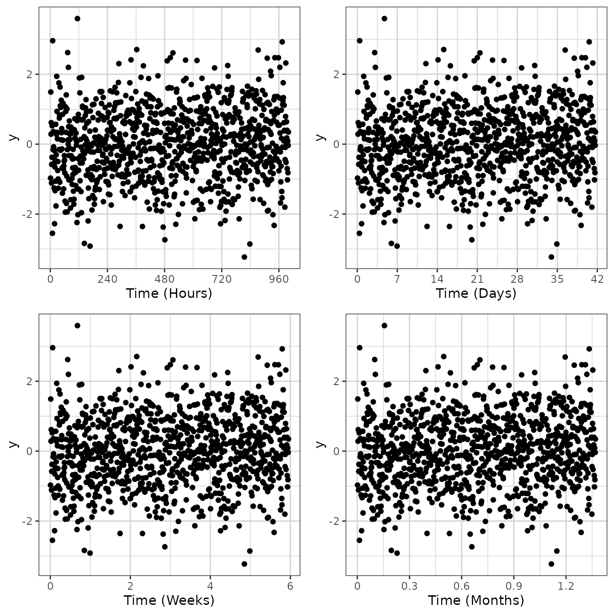